MAXimal
добавлено: 10 Jun 2008 17:54
редактировано: 31 Aug 2011 14:48
Содержание [скрыть]
Алгоритм Евклида нахождения НОД (наибольшего общего делителя)
Даны два целых неотрицательных числа  и
и  . Требуется найти их наибольший общий делитель, т.е. наибольшее число, которое является делителем одновременно и , и . На английском языке "наибольший общий делитель" пишется "greatest common divisor", и распространённым его обозначением является
. Требуется найти их наибольший общий делитель, т.е. наибольшее число, которое является делителем одновременно и , и . На английском языке "наибольший общий делитель" пишется "greatest common divisor", и распространённым его обозначением является  :
:
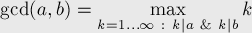
(здесь символом "" обозначена делимость, т.е. "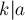" обозначает " делит ")
делит ")Когда оно из чисел равно нулю, а другое отлично от нуля, их наибольшим общим делителем, согласно определению, будет это второе число. Когда оба числа равны нулю, результат не определён (подойдёт любое бесконечно большое число), мы положим в этом случае наибольший общий делитель равным нулю. Поэтому можно говорить о таком правиле: если одно из чисел равно нулю, то их наибольший общий делитель равен второму числу.
Алгоритм Евклида, рассмотренный ниже, решает задачу нахождения наибольшего общего делителя двух чисел и за  .
.
Данный алгоритм был впервые описан в книге Евклида "Начала" (около 300 г. до н.э.), хотя, вполне возможно, этот алгоритм имеет более раннее происхождение.
Алгоритм
Сам алгоритм чрезвычайно прост и описывается следующей формулой:
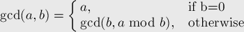
Реализация
int gcd (int a, int b) { if (b == 0) return a; else return gcd (b, a % b); }
Используя тернарный условный оператор C++, алгоритм можно записать ещё короче:
int gcd (int a, int b) { return b ? gcd (b, a % b) : a; }
Наконец, приведём и нерекурсивную форму алгоритма:
int gcd (int a, int b) { while (b) { a %= b; swap (a, b); } return a; }
Доказательство корректности
Сначала заметим, что при каждой итерации алгоритма Евклида его второй аргумент строго убывает, следовательно, посколько он неотрицательный, то алгоритм Евклида всегда завершается.
Для доказательства корректности нам необходимо показать, что 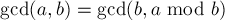 для любых 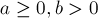 0">.
Покажем, что величина, стоящая в левой части равенства, делится на настоящую в правой, а стоящая в правой — делится на стоящую в левой. Очевидно, это будет означать, что левая и правая части совпадают, что и докажет корректность алгоритма Евклида.
Обозначим 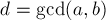. Тогда, по определению, 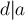 и 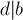.
Далее, разложим остаток от деления на через их частное:
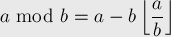
Но тогда отсюда следует:
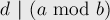
Итак, вспоминая утверждение , получаем систему:
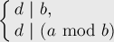
Воспользуемся теперь следующим простым фактом: если для каких-то трёх чисел 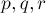 выполнено: 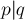 и 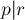, то выполняется и: 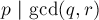. В нашей ситуации получаем:
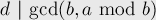
Или, подставляя вместо его определение как 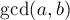, получаем:
его определение как 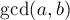, получаем: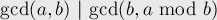
Итак, мы провели половину доказательства: показали, что левая часть делит правую. Вторая половина доказательства производится аналогично.
Время работы
Время работы алгоритма оценивается теоремой Ламе, которая устанавливает удивительную связь алгоритма Евклида и последовательности Фибоначчи:
Если 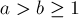 b \ge 1"> и 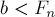 для некоторого  , то алгоритм Евклида выполнит не более
, то алгоритм Евклида выполнит не более  рекурсивных вызовов.
рекурсивных вызовов.
Более того, можно показать, что верхняя граница этой теоремы — оптимальная. При 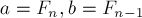 будет выполнено именно рекурсивных вызова. Иными словами, последовательные числа Фибоначчи — наихудшие входные данные для алгоритма Евклида.
Учитывая, что числа Фибоначчи растут экспоненциально (как константа в степени ), получаем, что алгоритм Евклида выполняется за операций умножения.
НОК (наименьшее общее кратное)
Вычисление наименьшего общего кратного (least common multiplier, lcm) сводится к вычислению следующим простым утверждением:
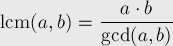
Таким образом, вычисление НОК также можно сделать с помощью алгоритма Евклида, с той же асимптотикой:
int lcm (int a, int b) { return a / gcd (a, b) * b; }
(здесь выгодно сначала поделить на , а только потом домножать на , поскольку это поможет избежать переполнений в некоторых случаях)
Литература